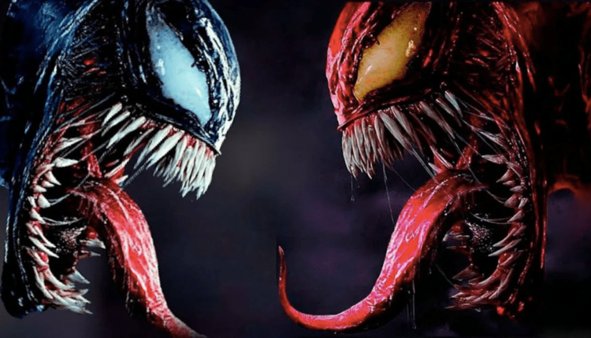

Últimas noticias

¡El primer tráiler de Venom: Let There Be Carnage acaba de ser
lanzado por Sony! Anunciado oficialmente en enero del 2019, Venom 2
verá el regreso de Tom Hardy como Eddie Brock, un reportero con mala
suerte que se fusionó con un simbionte alienígena, dándole poderes
sobrehumanos. Después de ser presentado en la escena post-créditos
de la primera entrega de Venom, se espera que Cletus Kasady (Woody
Harrelson) alias Carnage sea el villano principal de la secuela,
que también verá el regreso de Michelle Williams como la ex novia
de Eddie, Anne Weying, y Reid Scott como Dan Lewis, el nuevo novio
de Anne. Se une a la franquicia Naomie Harris como Shriek, quien es
el interés amoroso de Carnage en Marvel Comics.Aunque Ruben Fleischer
dirigió Venom, esta vez Andy Serkis fue reclutado para dirigir esta
secuela, con Kelly Marcel asumiendo las funciones de guion después
de co-escribir la primera película con Jeff Pinkner y Scott Rosenberg.
Inicialmente planeada para un lanzamiento en octubre del 2020, la fecha
de lanzamiento de Venom: Let There Be Carnage se retrasó un año, hasta
el 24 de setiembre 2021, debido a la pandemia de la COVID-19.
Los retrasos en las películas se han convertido en algo común gracias a
la pandemia de la Covid-19, pero ahora hay un poco más de esperanza de que
los cines vuelvan a estar en funcionamiento de alguna manera alrededor del
mundo, a medida que las vacunas se desplieguen lentamente. Es por eso que,
‘Venom: Let There Be Carnage’ ha sido retrasada hasta septiembre por Sony
después de que la última entrega de ‘Rápidos y Furiosos 9’ ocupe su lugar
de estreno.
Diario Expresión 10/05/2021